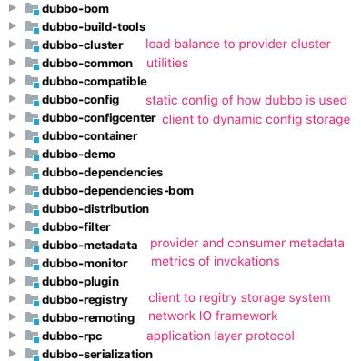
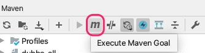

- 1. High level architecture and usgae
- 2. Import to IntelliJ
- 3. Dubbo Modules (Artifacts)
- 4. Local Debug
1. High level architecture and usgae
Dubbo is a Registry based RPC framework. Provider (service) register endpoint metadata to Registry. Consumer (client of service) subscribe and cache the service endpoint from Registry.
To use the RPC framework, Service side provide a java interface class to client. Client use that interface to call the methods.
Dubbo Spring integration provides a bean whose type is the interface and the implementation is a proxy (getting endpoint from Registry center and calling provider service).
2. Import to IntelliJ
git clone https://github.com/apache/dubbo.git
IntellJ -> Open -> find your dubbo folder
IntellJ will automatically recognize it as a maven project and downloads dependencies.
3. Dubbo Modules (Artifacts)

4. Local Debug
4.1 Setup Zookeeper as Registry Center
Download: https://zookeeper.apache.org/releases.html
Any version will do - we can use release line 3.6 because ZooKeeper clients from 3.4 and 3.5 branch are fully compatible with 3.6 servers.
The start script zkServer.sh uses zoo.cfg as config file.
The default path is ./conf. As a local test environment, I will just copy the provided ./conf/zoo_sample.cfg to ./conf/zoo.cfg to make the start script work. This is a basic config that setup port to 2181 for this single host server and store data into /tmp folder.
cp ./conf/zoo_sample.cfg ./conf/zoo.cfg
./bin/zkServer.sh start
4.2 Provider and Consumer
dubbo-demo module provides three ways to use Dubbo. The essence is the same. The service provider is DemoService and the consumer is just a main method.
Service provider creates the actual serviceImpl bean, and pass it to interface definition:
<bean id="demoService" class="org.apache.dubbo.demo.provider.DemoServiceImpl"/>
<dubbo:service interface="org.apache.dubbo.demo.DemoService" ref="demoService"/>
Service provider needs to register itself to Registry Center.
<dubbo:registry address="zookeeper://127.0.0.1:2181"/>
Then the client side can use the interface class to create a proxy bean, and call the methods of the bean like local methods.
<dubbo:reference id="demoService" check="false"
interface="org.apache.dubbo.demo.DemoService"/>
Client side code:
DemoService demoService = context.getBean("demoService", DemoService.class);
CompletableFuture<String> hello = demoService.sayHelloAsync("world");
4.3 Run
We use maven to build Dubbo. It can be done in CLI or in IntelliJ maven plugin.

mvn clean install -Dmaven.test.skip=true
Then we can start server and client just by running their main method.
Yes, the server is not using any Servlet container. Dubbo uses Netty to serve dubbo protocol!
Logs from server shows it automatically register its current IP address (my laptop ip in LAN) and port (default 20880) to zookeeper (127.0.0.1:2181), with supported methods and interface name.
[01/08/20 01:29:26:649 PDT] main INFO config.ServiceConfig:
[DUBBO] Register dubbo service org.apache.dubbo.demo.DemoService url
dubbo://192.168.43.137:20880/org.apache.dubbo.demo.DemoService?
anyhost=true&application=demo-provider&bind.ip=192.168.43.137&bind.port=20880&deprecated=false
&dubbo=2.0.2&dynamic=true&generic=false&interface=org.apache.dubbo.demo.DemoService
&metadata-type=remote &methods=sayHello,sayHelloAsync&pid=88546&qos.port=22222&release=
&side=provider×tamp=1596270566561 to registry registry://127.0.0.1:2181/org.apache.dubbo.registry.RegistryService?
application=demo-provider &dubbo=2.0.2&metadata-type=remote&pid=88546&qos.port=22222
®istry=zookeeper×tamp=1596270566555, dubbo version: ,
current host: 192.168.43.137
[01/08/20 01:29:26:927 PDT] main INFO transport.AbstractServer:
[DUBBO] Start NettyServer bind /0.0.0.0:20880,
export /192.168.43.137:20880, dubbo version: , current host: 192.168.43.137
Client side log shows it successfully gets the endpoint of service from Zookeeper.
[01/08/20 01:41:52:344 PDT] main INFO zookeeper.ZookeeperRegistry:
[DUBBO] Register: consumer://192.168.43.137/org.apache.dubbo.demo.DemoService?
application=demo-consumer&category=consumers&check=false&dubbo=2.0.2&init=false
&interface=org.apache.dubbo.demo.DemoService&metadata-type=remote&methods=sayHello,sayHelloAsync
&pid=94685&qos.port=33333&side=consumer&sticky=false×tamp=1596271312243,
dubbo version: , current host: 192.168.43.137
[01/08/20 01:41:52:372 PDT] main INFO zookeeper.ZookeeperRegistry:
[DUBBO] Subscribe: consumer://192.168.43.137/org.apache.dubbo.demo.DemoService?
application=demo-consumer&category=providers,configurators,routers&check=false&dubbo=2.0.2
&init=false&interface=org.apache.dubbo.demo.DemoService&metadata-type=remote&methods=sayHello,sayHelloAsync
&pid=94685&qos.port=33333&side=consumer&sticky=false×tamp=1596271312243,
dubbo version: , current host: 192.168.43.137
[01/08/20 01:41:52:712 PDT] NettyClientWorker-1-1 INFO netty4.NettyClientHandler:
[DUBBO] The connection of /192.168.43.137:62158 -> /192.168.43.137:20880 is established.,
dubbo version: , current host: 192.168.43.137
4.4 Zookeeper Review
[zk: 127.0.0.1:2181(CONNECTED) 1] ls /
[dubbo, zookeeper]
[zk: 127.0.0.1:2181(CONNECTED) 2] ls -R /dubbo
/dubbo/config/mapping/org.apache.dubbo.demo.DemoService/demo-provider
/dubbo/metadata/org.apache.dubbo.demo.DemoService/consumer/demo-consumer
/dubbo/metadata/org.apache.dubbo.demo.DemoService/provider/demo-provider
/dubbo/org.apache.dubbo.demo.DemoService/configurators
/dubbo/org.apache.dubbo.demo.DemoService/consumers
/dubbo/org.apache.dubbo.demo.DemoService/routers
/dubbo/org.apache.dubbo.demo.DemoService/providers/dubbo%3A%2F%2F192.168.43.137%3A20880%2Forg.apache.dubbo.demo.DemoService
%3Fanyhost%3Dtrue%26application%3Ddemo-provider%26deprecated%3Dfalse%26dubbo%3D2.0.2%26dynamic
%3Dtrue%26generic%3Dfalse%26interface%3Dorg.apache.dubbo.demo.DemoService
%26metadata-type%3Dremote%26methods%3DsayHello%2CsayHelloAsync%26pid%3D88546
%26release%3D%26side%3Dprovider%26timestamp%3D1596270566561
(I only list leaf nodes in above ls -R /dubbo results.)
The last item is exactly the same as the one in service log "Register dubbo service...".